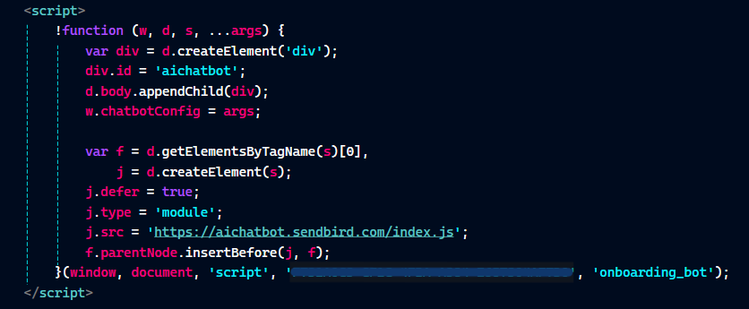
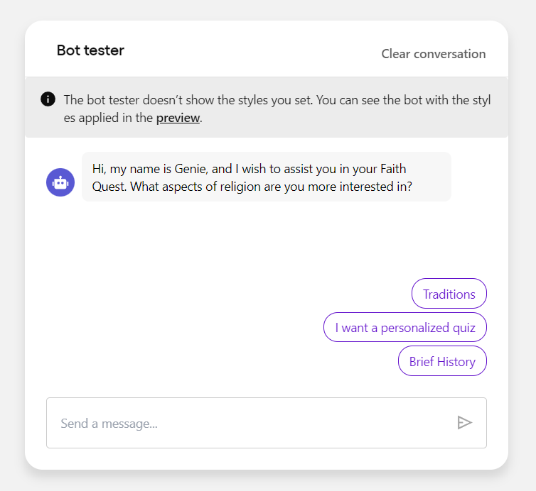
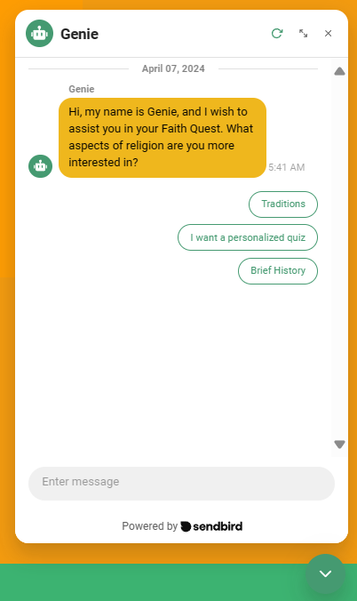
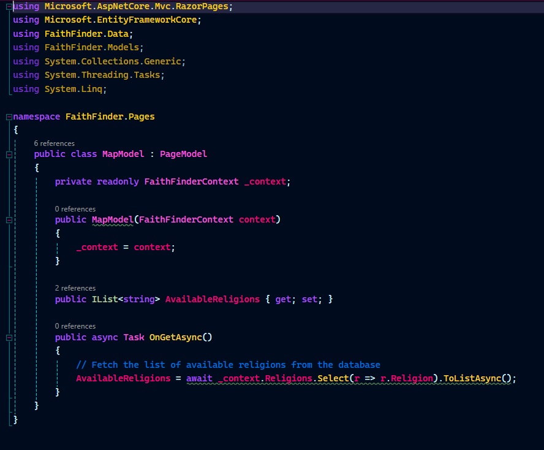
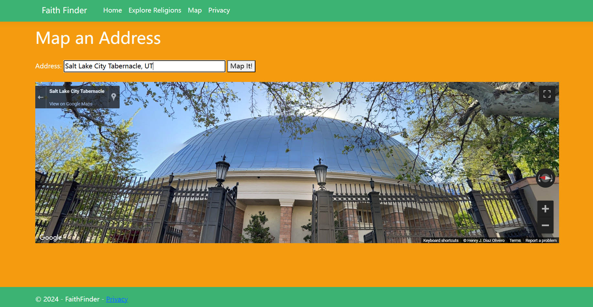
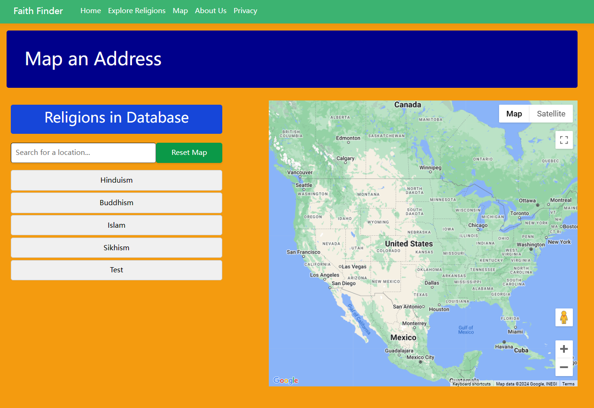

Thunderbioink⚡
Focus-Areas Certifications Senior Project Resume About ContactSenior Project 🤖
1. Initial Site Layout
One element that ended being incorporated in almost all views was the AI enabled portion: it quizzes users on Religious interests and aids into answering religion history, traditions, and other questions. Throughout the development process, keepin true to the basic and simple design helped me remain focused on major functionality requirements prior to presenting the completed product at a World Religion Project Fair and the Final Senior Project Review.

Design Layout 1

Design Layout 2
2. AI Enabled Quiz Feature
Here is the decision map from which I based the logic and choices the AI feature would respond to on the web app. I'll be frank, the logic ended up removing the "Send User to..." prompts.

This is how the AI feature ended up looking like; I incorporated a Chat Bot feature powered by SendBird.
JavaScript Code provided by SendBird; must be inside .cshtml views.

SendBird offers you a space to train and customize your AI Bot.

AI Bot in action while Web App is running.
3. Google Maps API Enabled
This was the Mapping portion with different features enabled thanks to Google Mapping API's. A model needs to be created on the .cs view of the site to handle the mapping and array that is updating itself each time we add a new religion to the Database; the name I gave it was MapModel. See the structure below.
Here is a before view, when I finally got the JavaScript to display Google Maps, so I took a screenshot to remember that milestone after several failed attempts. While trying to add more functionality to my map, I spent more than three weeks with a broken map. This timeframe helped me get more familiar with Goggle Map Documentation, different JS code blocks that could produce the desired or non-desired outcome.
A couple weeks prior to final delivery, this was the final view of the Map Page. Basically, if the user clicks on each Religion on the left, it will auto-populate locations in the USA with that Religion name. Otherwise, the user can enter their desired location input into the Search box.
4. Faith Finder Demo
Go ahead and watch the full-demo for FaithFinder. In this video you will observe the multiple API based solutions I was able to implement to enhance the overall User Experience of the site. I also share main take aways of the importance of incorporating existing tools to facilitate the provision of a service to communities or groups in need of digital representation.